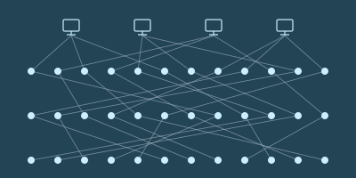

白和芬坐在一处院子里，边吃边喝。白脸上淌着泪。
“你知道吗，泽这孩子其实挺好的，”芬轻声说。“你要是能对他好一点，他能帮上你大忙。”
“好一点，像你这样？”白反问，语气发苦。
芬犹豫了。他不知道该怎么接话。
“你知道泽带着他妈，跟我一起去自由城那一趟，我是什么感受吗？”她问。
“难受，因为你本想跟他单独走这一趟，可你看得出来，他并不想？”芬问。
“不是！”白喊道。
“我给你个提示。前几天那盘棋下完，你提议下一趟让我带上我妈，我当时就是那个感受。”
“你不喜欢你妈？”
“你从来没问过我妈是谁、在哪儿！我们见过十多次面，你一次都没问过。”
“好吧，抱歉。你妈是谁？”
“我妈死了！我爸也是。”
“我还小的时候，他们死在一场实验室爆炸里。是谁干的，你知道。”
芬的脸沉了下来。
“我住在姨妈家。可她基本不管我，给我一间房，一天两顿饭，就这么多了。”
“所以我只能靠自己活下来。学着怎么自己挣钱。上高中的时候就在打零工。”
“所以，以前那几次我不让他拿奖金去给他妈买算力盒，希望泽能原谅我。”
“我连妈都没有！我只有我的成绩、我的成就。现在连这个也被泽拿走了。”
她安静下来，往椅背上一靠。这些话她原本没打算说。停了一小会儿，她又开口了。
“可泽那几手棋，真是漂亮。我沿着对角线布下那么完美的防线，把他骗到那里去进攻，当时我特别得意，觉得那是我这辈子做过最聪明的一件事。结果他一出手，做了件更聪明的。”
“我确实想更懂你们。你们是被什么驱动的，又是怎么想的。”
白和芬都停了下来，各自喝了几口茶。
“换个话题吧。来，你想不想看看他们打算把泽国语下一版做成什么样？”
白的眼睛一亮。
“行啊，看看。”她回答。
芬掏出他的小册子，封面上写着“po so dze go ban de sia”——“泽国语第九版的构想”。
“泽国语是一部杰作，”芬解释道。“它始终在几者之间艰难地保持平衡：既要容易学、语法有逻辑，又要说着顺口、读着舒服，还得能用来谈现实生活里人们真正在意的事。”
“最早那几版，是在上个世纪我们输给北极人那场战争之后只过了十年就着手做的，内容简单，也没什么争议：把图画文字换成字母，砍掉复杂的变格、变位和不规则动词。”
这时候，白已经听得入了神，眼里全是好奇。
“接下来是语法上更难的取舍。泽国语的语法可以非常有逻辑——只要你想让它有逻辑。拿个小学水平的简单句子来说：‘giu jan li mo fe jia dzu lie’。那人吃牛油果。‘li’是主语和动词之间的分隔词，‘fe’是动词和宾语之间的分隔词。计算机程序能直接解析，毫无歧义。”
“还能更复杂。‘lo mo fe jia dzu lie zo hen jun’。吃牛油果有益健康。‘lo’和‘zo’是开括号和闭括号。口语里，‘lo’可以省掉。”
“但这样就有了歧义。拆开看‘jia dzu lie’——黑心果。它是中心是黑色的果，还是既黑、又在某种意义上是‘中心’的果？理论上我们有专门的分隔词：‘ji’。我们可以说‘jia dzu ji lie’，歧义就少一些。但歧义永远无法彻底消除。木瓜籽的中心也是黑的。”
“所以必须在规则性和实用性之间找平衡。聊日常生活里常见的事时，得好说、好听。于是班孙培的祭司们就去试着优化意义空间的规则性，尽管他们清楚自己永远不会——也不可能——完全成功。”
“只要你掌握那256个词根，人们说的话你就能听懂超过一半。不是全部，但比从前好得多——从前，一个复杂的词，你没见过它本身，就完全猜不出它是什么意思。”
“他们为什么在这上面下这么大功夫？为什么不多花点力气去搞经济、搞技术，或者搞军事之类的？”
“这个嘛，我们要是去搞那些，北极人就炸我们。语言是无害的。我觉得连北极人都觉得泽国语了不起。另外，班孙培还有几次腾出手来改革计时体系——一分钟一百嘀嗒、一长时一百分钟、一天十长时，就是这么来的——而且我们让这套东西在全世界扎了根。连北极人都采用了。”
“你们是不是还有一本秘密教科书，里头连那个的第九版都规划好了？”
“有。我们想在某个时候用光尺取代米。光每一嘀嗒走十亿光尺。一光尺等于259.020683712毫米。”
“听说英格尔沃人挺喜欢这个。他们的旧计量单位被人数落了那么久，说又复杂又没逻辑；现在我们推出的这个单位，长度跟他们过去用的长度单位很接近，而且是直接建立在宇宙最基本的物理常数之上的。所以某种意义上，我们是在说他们一直是对的。”
白笑了。
“总之，泽国语的下一版——”
白打断了他。
“下次吧。这些让我挺好奇的，我觉得哪天该自己去研究研究泽国语的历史。”
“直觉不错！我保证，等讲到第九版会更有意思。泽自己看不到这些的价值，他最近满脑子都是棋。”
“我想也是。而且我看这事不会停，对他来说显然回报很丰厚。”
“也许我该找个时候跟他下几盘，图个乐——或者说，对他来说算练棋吧。”
“哦，还有，谢谢你岔开话题，让我心情好起来！”
泽穿过隧道，顺着手表给的指引走下楼梯。每到岔口，他都会四面看看，把周围的环境看个仔细。他从没进过这座山体金字塔这么深的地方。
最后，他来到一扇密封的门前，门边有个绿色的圆圈。他把手表贴上去碰了一下。门缓缓打开。
门后是一间又窄又长的屋子，屋子尽头摆着一张长桌。桌边坐着一个人，披着一件暗影般的斗篷——不是维里迪亚的隐私袍，而是民本棋祭司的服饰。
泽慢慢走过屋子，在祭司对面坐下。
“欢迎。”祭司轻声说。
“我很荣幸能来这儿，”泽回答。“不过……您是谁？”
“我叫登，昆高培最高评议会的成员。谢谢你来。”
“昆高培？我们也有自己的秘密防卫组织？给泽国再养一支影子军队？”
“当然。你意外吗？”
泽犹豫了。
“前几天那盘民本棋，你的表现让我印象很深。”
“但让我印象深的，不只是你赢了。我把那盘棋的棋谱研究了一遍。让我印象深的，是你下出的那种策略。”
“说说看，你学过密码学吗？”
“我……知道点基础？大数分解很难；加密就是把数取立方，再对 n 取模；只有知道构成 n 的 p 乘 q 的人，才能把取立方反过来解密。”
“不不，那是科普层面的密码学。基于大数分解的那套东西，已经几十年没人用了；连椭圆曲线都过时了，因为大家都担心北极人哪年就搞出量子计算机。”
泽没接话。他回望着对方，一半是长了见识的受用，一半是好奇：这场对话到底要往哪儿去。
“好。我觉得你上一盘棋，已经快从零开始把密码学的很大一部分发明出来了。”
“想想混淆协议。你想把一段程序交给别人，让他能运行，却看不到程序内部的细节。我们现代的密码学网络——比如给泽国的秘密组织处理支付、信誉，并管理治理事务的那些——全都靠这个。”
“可你怎么做出一个能干这事的统一协议？把程序藏起来？把数据藏起来、再在隐藏的数据上做加法和乘法，这很好理解，尤其是把数据藏进大向量里、套上线性变换、再在上面叠一层误差。可你怎么把程序藏起来？你到底要把程序藏进一个什么样的‘可能程序’空间里？”
“解法——好吧，是某一类解法的一小部分——是造一个元程序。一个能根据输入运行任何程序的程序。这样一来，程序就被化约成一组数字，你只要对它们做加法和乘法就行。”
“这是计算机科学里最基本的把戏之一。我们的计算机，那些硬件本身，就是元程序。但你自己琢磨出了它一个非常基础的版本——仅仅十六种可能的算法，熔进一座工厂——再用它，加上一个藏起来的滑翔机来提供输入，把意图藏住。”
泽点点头。
“谢谢您的夸奖。不过……我现在很好奇，您说这些是要往哪儿走？”
“泽，我想把你招进防卫体系。”
泽眼睛睁大，嘴也张开了。
防卫。泽下意识地一张一合左手的每根手指。那条胳膊断过，养了一个月才好，起因只是一堂热力学课。而登说的这个，可不是上课。
可他的命，恰恰是被这种工作救下来的——一次秘密而配合默契的临时换房。也许这就是他的机会，能替别人做同样的事。
“我确实希望你把民本棋一路下到全国赛。我觉得这对你有好处。但学业上，去学密码学。我想这对你的棋也有帮助。”
“当然，这一路我都会跟你保持联系。等你准备好了，我会开始给你派些任务。”
泽又一次用沉默作答。
派任务。他注意到，登很快就换上那副腔调，仿佛泽一定会照他的计划走。他心里有一部分已经在给自己找答应的理由；另一部分则看着自己的热情一点点涨起来，并不完全信它。
“我有个主意，”登开口了。“你知道芯片验证是怎么做的吗？比方说，我现在是怎么自动把你身上所有电子设备都确认成友方的？”
登一说完，泽就开口了。纯属运气，登挑来考他的，正是他确实研究过的应用密码学领域之一。
“设备制造的时候，生产过程中会生成一个物理不可克隆函数——那是芯片造好后冷却、化学物质沉降下来时生成的一把密钥。连厂商都不知道它是什么。厂商会去探取设备的公钥——也就是那个 p 乘 q，不过我现在知道了，根本不是 p 乘 q，是完全不同的东西。然后厂商用自己的密钥给这把公钥签名，再把签名发布到密码学网络上。”
“行吧，把函数叫成密钥也算，差不太多。继续。”
“作为用户，你可以让设备对一个值签名。设备会照做。然后你拿从密码学网络上下载的公钥去验这个签名，确认它确实来自那家厂商。”
“然后还有公共检查员。他们随机从厂商那里买设备，用某种扫描手段做破坏性检查，验证芯片里的逻辑确实和它应有的设计一致。”
“为什么要上密码学网络？直接签名不行吗？”
“这样你才知道总共有多少，也防住一种攻击：厂商作弊，或者有人黑了厂商的密钥，然后开始多签一堆本不该签的公钥。而且这样一来，你也知道签名是什么时候做的，从而知道它是在设备制造的时候签的。万一厂商的密钥被偷了，你还能分辨签名是在失窃之前还是之后做的。”
“那我要怎么验证你的设备？”
“无线问它要一个签名，跟我验证它的方式一样。”
“我怎么知道它不是把别处另一台设备的回应转过来的？”
“在这儿，因为我们深在山里。一般来说，我不知道。”
“芯片检查的流程是怎么走的？”
“这个我不知道。”
“检查员怎么知道他们拿到的设备，和普通消费者拿到的是同一批，而不是厂商特意挑出来骗他们的？”
“我不知道。”
“我们先想另一个场景。就说公共监控摄像头，装在路灯杆上、楼外墙上，或者巴士上的那些。每个泽国人都有权时不时随机挑一个，拧下来自己分析。正因如此，我们才知道它们只在该录、该传的时候录和传；从制造到安装，供应链上没有任何人能给它做手脚，把数据泄露给跟踪狂、内幕交易者或者北极人。”
“这就是随机检查机制——前提是那些把检查摄像头当爱好的人里，至少有一部分真的是随机挑的。这套适用于监控摄像头：它们本来就摆在公共场合，谁都能随便挑一个去拧。那这里呢？从厂商手里买的电脑芯片，怎么做随机检查？”
“好，那您说。”
“很好，我很高兴还有不少东西能教你。要不我们现在就去其中一家厂看看？”
泽想了一下。他给自己找了个理由：这还不算正式的承诺；而且那是他从没见过的东西。
“好啊，很乐意！”
泽和登走出屋子，穿过隧道，来到金字塔一个较小的出口。出口直通一辆长方形黑色轿车的内部。金字塔的门和车门形状一模一样，紧紧贴在一起。
泽和登上了车。
车门密封合上时，泽注意到车厢内壁衬着隔信箔。车上有窗，但从里面看出去，外面的世界像蒙了一层暗色；他知道，从外面往里看，几乎什么也看不见。
车开动了，一分钟后驶进一条隧道。
那一刻泽意识到，这世上已经没有人知道他在哪儿了。
泽和登下了黑色轿车。这一次，车门正对着一扇敞开的门，门里是一道通往地下室的楼梯；外面的人连一嘀嗒都别想看见他们。两人走下楼梯，最后进了一间大屋子。
眼前是成千上万个白色的空盒子，侧面贴着带二维码的标签；一台机器正把从隔壁屋传送带上送出来的芯片自动装进盒子里。
登打开手持终端，给泽看了一张图。

“你以前见过这个吗？”登问。
“某种互联网的结构图？”
“这是混网。交易就是靠它进到密码学网络上的，而没人能看出是谁发的。”
“每个发送者的每条消息，都裹上三层加密。这个最外层的消息会被送到第一层的一个节点。”
“第一层的节点拆开最外面那层加密，看到里面又是一条加密消息，还附着一个地址，指明该把它发给第二层的哪个节点。”
“第二层的节点拆开下一层加密，看到里面又是一条加密消息，还附着一个地址，指明该发给第三层的哪个节点。”
“最后，第三层的每个节点拆掉那一层加密，拿到目的地址和真正的载荷。当然，通常载荷本身也是加密的。”
“哇，我没想到是这么运作的。所以要三个节点合谋，才能查出一条消息的发送者。”
“不只是三个节点——是三个随机抽选的节点。如果你特别多疑，还可以把最内层的载荷做成又一个信封，要求让这条消息在下一轮再回到系统里走一遍。”
“所以打包这一环做的就是这件事。那些盒子高度不透明、带防拆封口，二维码就是加密后的载荷。这是混网，只不过送的是实物。”
“你要是通过这套系统买东西，三个节点里只有最后一个知道你的地址，而它既不知道发件人是谁，也不知道送的是什么。如果你多疑到了极点，还可以把地址填成公共自提点，自己去取。”
“检查员也从混网下单。所以作为消费者，只要你也从混网买，你拿到的芯片就和检查员买的是同一批——厂商要是想让检查员拿到一块能过检的真芯片，几乎就不可能不顺手也给你一块。他们分不清哪块芯片——或者经这套系统流转的别的什么实物——会到谁手里。”
登于是朝一扇门走去。泽跟上他。
登把手表贴到一个泛着绿光的圆圈上。门开了。
他们穿过一条走廊，拐了几个弯，又过了一道门，进到一间摆着一台大型显微镜的屋子。
“这是这家晶圆厂的检测中心。他们既检自己的芯片，也检别家生产的。”
“他们会用不同波长做多种三维扫描，确保芯片的实体与规格完全一致。”
“佩服。替我谢谢那位批准你带我们参观的人。”
“我会的。对了，泽，我记得你还有个问题。”
“记得。不过那问题跟制造无关。”
“没错——是问验证的人怎么知道回应不是从另一台设备转过来的。这个答案我也能告诉你。我的手持终端上跑着一套协议，会反复联系每台设备一百万次，要求整套协议在十分之一嘀嗒内跑完。所以无论签名从哪儿来，它必须在五十光尺以内——差不多十三米——实际上还要更近，因为芯片本身也有延迟。”
“那么，泽，你怎么想？”
“您说过我还能打全国赛，对吧？”
“我是希望你打全国赛。”
“好，我加入——至少我可以先承诺把学业转到密码学，看看走得怎么样。”
登点点头。
登继续往前走，泽的思绪飘开了——先飘到就在眼前那台大型显微镜上，然后飘到别的事情上。
他开始想那天下午要怎么跟妈妈说。他可以说芬忙，说自己出去散了会儿步。但他不能把真相全说出来。昆高培不许——而且妈妈已经看过他挨过一次炸弹后养伤的样子。
Bai and Fin were sitting together in a courtyard, eating and drinking. Tears ran down Bai's face.
"You know, Zei is really quite a nice kid", Fin stated softly. "If you could just be nicer to him, he could help you so much."
"Nicer, like you?", Bai replied, distressed.
Fin hesitated. He did not know how to respond.
"You know how I felt when Zei brought his mom along on the trip to Freetown with me?", she asked.
"Sad because you wanted to have the trip alone with him, and you could tell that's not what he wanted?", Fin asked.
"NO!", Bai shouted.
"I'll give you a hint. I felt the same after the game a few days ago when you suggested I bring my mom along for the next trip."
"You don't like your mom?"
"You never asked me where or who my mom even is! Not once, in the more than ten times we've met."
"Well, sorry. Who is your mom?"
"My mom is DEAD! My dad too."
"Killed in an explosion in a lab when I was still a small kid. You know who did it."
Fin's face dropped.
"I stayed in my aunt's place. But she basically ignored me, just gave me a room, and two meals a day, and that's basically it."
"So I had to survive with my own bare hands. Learn how to make my own money. Do side jobs even while I was in high school."
"So I hope Zei forgives me for those times when I didn't let him get his prize money to give his mom a compute box."
"I don't even have a mom! All I have is my achievements and my success. And now Zei has taken that away from me too."
She went quiet, and sat back in her chair. She had not planned to say any of that. After a brief pause, she spoke again.
"But those tactics of Zei's, they were beautiful. I was so proud when I put up such perfect defenses along my diagonals and tricked Zei into attacking there. I felt like that was the smartest thing I had done in my whole life. And then he came out and did something even smarter."
"I do want to understand you guys better. What drives you, how you think."
Bai and Fin both took a brief break to drink some of their respective teas.
"Let's talk about something else. Here, do you want to see what they have in mind for the next version of Dzegoban?"
Bai's eyes perked up.
"Sure, why not", she replied.
Fin took out his booklet, with "po so dze go ban de sia" - the conception of Dzegoban version nine - on the cover.
"Dzegoban is a masterpiece", Fin explained. "Always navigating the tough balance between being easy to learn, logical in syntax, but also nice to speak and read, and useful for talking about the things that people care about in the real world."
"The first versions, started only a decade after we lost the war against the Arctics last century, were simple and uncontroversial. Move from the pictorial script to an alphabet, get rid of the complicated declensions and conjugations and irregular verbs."
By this point, Bai was listening intently, her eyes full of curiosity.
"Then came the harder tradeoffs, on the grammar. Dzegoban grammar is very logical, if you want it to be. Take a simple sentence, like in elementary school: 'giu jan li mo fe jia dzu lie'. The man eats the avocado. 'li' is the separator between subject and verb, 'fe' is the separator between verb and object. A computer program can parse that, very unambiguous."
"You can get more complex. 'lo mo fe jia dzu lie zo hen jun'. It's healthy to eat an avocado. 'lo' and 'zo' are the opening and closing brackets. And colloquially, you can leave out the 'lo'."
"But then you get ambiguity. Let's unpack 'jia dzu lie' - black center fruit. Is it a fruit with a black center, or is it a fruit that is both black and 'central' in some sense? Theoretically, we have the separator for that: 'ji'. We could say 'jia dzu ji lie', and it would be less ambiguous. But you can never remove the ambiguity completely. Papaya seeds have a black center too."
"So you have to balance regularity with practicality. Being easy and pleasant to speak when you talk about things that are common in people's lives. So the Bansunpei priests tried to optimize the regularity of the meaning space, even while knowing they would never - could never - fully succeed."
"If all you know are the 256 roots, you can understand more than half of what people are saying. Not all, but much better than the olden days, when you could not tell what some complicated word means at all unless you had seen that exact word before."
"Why are they putting so much work into this? Why not focus more on improving the economy, or technology, or the military or something?"
"Well, if we work on those things, the Arctics bomb us. Language is harmless. I think even the Arctics find Dzegoban impressive. Also a couple of times the Bansunpei took time to reform the timing system - that's how we got a hundred ticks a minute, a hundred minutes a longhour and ten longhours a day - and we got that to stick across the whole world. That, even the Arctics adopted."
"Do you guys have a secret textbook with a planned version nine of that?"
"Yeah, at some point we want to replace the meter with the lightfoot. Light travels at one billion lightfeet per tick. One lightfoot is two hundred fifty-nine point oh two oh six eight three seven one two millimeters."
"Apparently, people in Inglewore like it because for so long people made fun of their older measurement units for being complicated and illogical, and now we're coming out with a unit that's very close to their older distance unit in length, that's directly based on the very base physical constants of the universe. So in some sense, we're saying that they were right all along."
Bai grinned.
"So anyway, the next version of Dzegoban-"
Bai cut him off.
"Maybe next time. This is all making me curious, I feel like I should go study the history of Dzegoban on my own at some point."
"Good instinct! I promise, it gets even more fun once we get into version nine. Zei doesn't see the value of all this himself, he's so focused lately on his games."
"I'm sure he is. And I don't think it will stop, it's clearly paid off very well for him."
"Maybe I should play some games with him for fun - or I guess for him, for practice - at some point."
"Oh, and thank you for distracting me and cheering me up!"
Zei walked through the tunnel, and down the stairs, following the directions that his watch gave him. Every time he got to a fork, he made sure to look in all directions, taking in his surroundings. He had never been this deep into the depths of the mountain pyramid before.
Eventually, he got to a sealed door with a green circle beside it. He tapped his watch against the circle. The door slowly opened.
Behind the door, there was a narrow and long room, and at the end of the room there was a large table. At the table, a man was sitting wearing a shadowy cloak - not a Veridian privacy robe, but the dress of the Minpentai priests.
Zei walked across the room slowly, and sat down across from the priest.
"Welcome", the priest said softly.
"I am honored to be here", Zei replied. "But ... who are you?"
"I'm Den. High Council member of the Kungaupei. Thank you for coming."
"Kungaupei? We have a secret society for defense too? Growing Dzego a whole secondary shadow army?"
"Of course, are you surprised?"
Zei hesitated.
"I was impressed by your performance in the Minpentai game a few days ago."
"But I wasn't just impressed because you won. I studied the transcripts from the game. I was impressed because of the kind of strategy that you played."
"Tell me, have you studied any cryptography?"
"I... know the basics? Factoring is hard, you cube modulo n to encrypt, and only someone who knows the p times q that make up n can invert the cubing to decrypt."
"No no, that's popular science cryptography. Nobody has been using the factoring-based stuff for decades now, even elliptic curves are falling out of fashion because everyone's worried that the Arctics are going to come out with a quantum computer any year now."
Zei did not respond. He stared back, in a mix of appreciation for the update to his knowledge, and curiosity about where this whole conversation was going to lead.
"Okay, well I think in your last game you've come really close to inventing big parts of cryptography from scratch."
"Think about obfuscation protocols. You want to give someone a program, that they can execute, without being able to see the internal details of the program. It's what our modern cryptographic networks - like the ones that handle payments and reputation and manage governance for Dzego's secret societies - all rely on."
"But how do you make a single protocol that can do that? Hide the program? It's easy to see how to hide the data, and then do addition and multiplication on hidden data, especially when it's all done by hiding it in big vectors under linear transformations and adding errors on top. But how do you hide a program? What kind of a space of possible programs do you even hide a program in?"
"The solution - well, okay, a small part of one type of solution - is that you create a meta-program. A program that, depending on its input, can run any possible program. And then you've reduced the program to just being a set of numbers that you're doing addition and multiplication to."
"It's one of the most basic tricks in computer science. Our computers, the physical hardware, are meta-programs themselves. But you figured out a really basic version of that - just sixteen possible algorithms, melded into one factory - and used that, plus a hidden glider to provide the input, to hide your intentions."
Zei nodded.
"Well thank you for the compliment. But ... I'm curious now, where are you going with this?"
"Well, Zei, I want to recruit you into defense."
Zei's eyes and mouth opened.
Defense. Without thinking, Zei opened and closed each finger of his left arm. That arm had been broken and taken a month to heal, all because of a thermodynamics lecture. What Den was suggesting was not a lecture.
But his life had been saved by exactly that kind of work - a secretive, well-coordinated room change at the last minute. Maybe this was his chance to do the same for someone else.
"I do want you to continue Minpentai into the nationals. I think it will be good for you. But for your education, do cryptography. I think it will also help you in your games."
"And of course I'll stay in touch the whole way, and when you're ready, I will start suggesting some tasks for you."
Zei responded with silence once again.
Tasks. He noticed how quickly Den had shifted into the register of assuming that Zei would go along with his plans. Part of him was already coming up with reasons to say yes. Another part was watching his enthusiasm slowly build up, and did not entirely trust it.
"I have an idea", Den began. "Do you know how chip verification works? Like, how I'm automatically verifying that all your electronic devices are friendly right now?"
Zei began to reply as soon as Den finished. By sheer luck, Den had decided to grill him on one of the areas of applied cryptography that he had already researched.
"When a device is manufactured, a physical unclonable function is produced as part of the process - a secret key that gets generated though chemicals settling down as the chip cools down after it's produced. Not even the manufacturer knows what it is. The manufacturer prods the device to get its public key - the p times q, or I guess now I know it's not a p times q at all, it's something totally different. It then signs that key with its key, and publishes that to the cryptographic network."
"Okay I guess you can call a function a key, close enough. Go on."
"As a user, you can ask the device to sign a value. The device will do that. You can then verify its signature against the public key that you download from the cryptographic network, to check that it actually came from that manufacturer."
"And then you have public inspectors. They buy devices randomly from the manufacturer, and use some kind of scanning to destructively inspect them. Verify that the chips actually have the logic that they are supposed to have."
"Why the cryptographic network? Why not just sign it?"
"So that you know how many there are, avoiding attacks where either the manufacturer is cheating or someone hacks their key, and they start signing over even more public keys than they should. Also it means you know when the signature was made, so you know it was made when the device was manufactured. And if the manufacturer's key somehow gets stolen, you can tell if the signature was made before or after that happened."
"And how do I verify your device?"
"You ask it for a signature wirelessly, same way I verify it."
"How do I know it's not just forwarding responses from a different device somewhere else?"
"Here, because we're deep inside a mountain. Generally, I don't know."
"How does the chip inspection process work?"
"That I don't know."
"How do the inspectors know that they're getting devices from the same pool the public is getting, and not devices specifically chosen by the manufacturer to fool them?"
"I don't know."
"Let's think about a different case first. Take the public security cameras, the ones on the lamp posts or the outsides of the buildings or the autobuses. Every Dzegojan has a right to occasionally randomly pick one, unscrew it and analyze it themselves. That's how we know that they're only recording and transmitting when they're supposed to, and no one in the supply chain from the people manufacturing them right up to the people installing them can bug them and leak any data to a stalker or an insider trader or an Arctic."
"That's the random inspection process - assuming at least some of the people who make inspecting cameras their hobby actually choose randomly. So that's for security cameras, that are already in public so anyone can just choose a random one of them to go and unscrew. Now, what do we do here? How do we do random inspection for computer chips that you buy from a manufacturer?"
"Okay, you tell me."
"Well, I'm glad there's still a lot that I can teach you. How about we go and visit one of these factories right now?"
Zei thought for a moment. It was not yet a commitment, he reasoned, and it would be something he had never seen before.
"Sure, would be happy to!"
Zei and Den walked out of the room, through the tunnels, and to a smaller exit from the pyramid. The exit led directly into the interior of a large rectangular-shaped black car. The pyramid door and the car door were exactly the same shape, and were pressed tightly against each other.
Zei and Den got in.
As the door sealed shut, Zei noticed anti-transmission foil lining the sides of the car. The car had windows, but they seemed to show a dimmed version of the world outside; from the outside, he knew, they would show almost nothing at all.
The car started moving, and a minute later it entered a tunnel.
At that point Zei realized that no one in the world now knew where he was.
Zei and Den got out of the black car. The car's door now opened directly into the open door of a staircase leading down to a basement, shielding them from even a tick of being visible to the outside. The two walked down the stairs, and eventually entered a large room.
They saw thousands of empty white boxes, with labels on the side containing a two-dimensional barcode, and a machine automatically putting chips into boxes as they came out of a conveyor belt from another room.
Den opened up his hand device, and showed a diagram to Zei.
"You ever seen this before?", Den asked.
"Some kind of diagram of the internet?"
"It's a mixnet. It's how transactions get onto the cryptographic network without people being able to see who sent them."
"Each message from each sender gets wrapped with three layers of encryption. That top-level message gets sent to a node on the first layer."
"The node on the first layer unwraps the top layer of encryption, and sees another encrypted message, along with the address of which node in the second layer they are supposed to send it to."
"The node on the second layer unwraps the next layer of encryption, and sees another encrypted message, along with the address of which node in the third layer they are supposed to send it to."
"Finally each node on the third layer unwraps that layer of encryption, and gets the address of the destination, plus the actual payload. And of course, usually, the payload itself is encrypted."
"Wow, I didn't realize that's how it works. So you need three nodes to collude to unmask the sender of a message."
"Not just three nodes - three randomly selected nodes. And if you're paranoid, you can make the inner payload be yet another envelope, requesting to send the message right back through the system in the next round."
"So this is what the packaging step is doing. Those boxes are highly opaque and tamper-proof sealed, and the two-dimensional barcode is the encrypted payload. It's a mixnet, but for delivery of physical goods."
"If you buy a product through this system, only the last of the three nodes knows your address, and they don't know who the sender was or what they're delivering. And if you're double paranoid, you can set your address to a public drop-off point and pick it up yourself."
"Inspectors buy through the mixnet. And so as a consumer, if you buy through the mixnet yourself, you're getting your chip from the same pool that the inspectors are buying from - the manufacturer has no way to give an honest chip that passes inspection to the inspectors, without almost certainly giving one to you too. They can't tell which chips - or whatever other physical goods are passing through this thing - are going to whom."
Den then walked forward toward a door. Zei followed him.
Den put his watch against a circle with a glowing green outline. The door opened.
They walked through a hallway, took a few turns, and then went through another door. They entered a room with a large microscope.
"This is the inspection facility of this fab. They inspect both their own chips, and those produced by others."
"They do multiple types of three-dimensional scanning, at different wavelengths, to make sure that the physical chip exactly matches the specification."
"I'm impressed. Say thank you to whoever gave you permission to give us a tour."
"I will. So Zei, I remember you had another question."
"Yeah I remember. Though it wasn't about manufacturing."
"Indeed - it was about how someone verifying could know that responses are not being forwarded from a different device. I can tell you the answer for that too. My hand device has a protocol by which it repeatedly contacts each device a million times, and expects the whole protocol to finish within a tenth of a tick. And so wherever the signature comes from, it has to be within fifty lightfeet away - almost thirteen meters - actually, even closer, because of the latency of the chips themselves."
"So Zei, what do you think?"
"You said I can still do the nationals, right?"
"I want you to do the nationals."
"Okay yes, I'll join - or at least, I'll commit as far as switching my studies to cryptography and see how that goes."
Den nodded.
When Den kept walking forward, Zei's mind wandered - first, to the large microscope that was directly in front of him, and then to other matters.
He started thinking about what he would tell his mom that afternoon. He could talk about Fin being busy, about himself going for a walk. But he could not tell the full truth. The Kungaupei forbade it - and his mom had already watched him heal from one bomb.